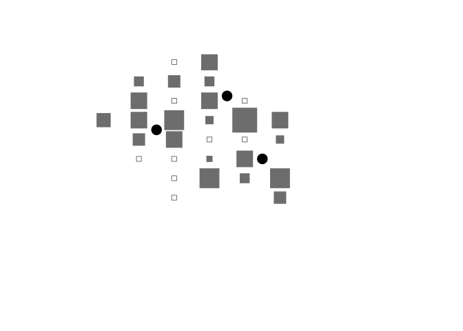
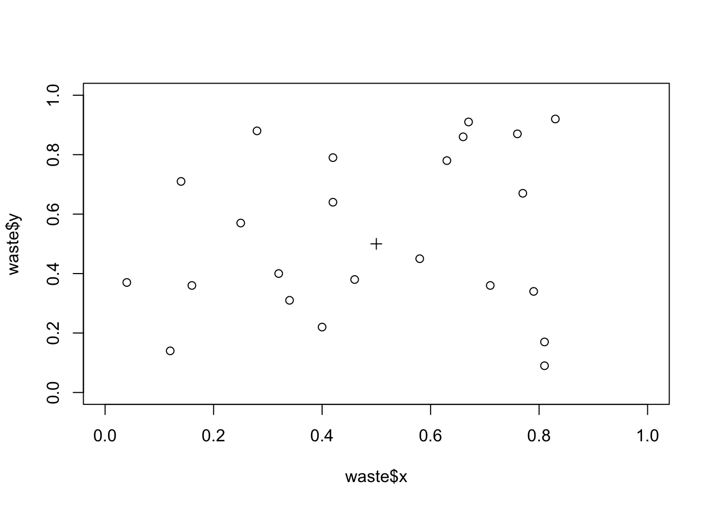

Exercise 9 Computer intensive methods
9.1 Estimation
Estimation involves the calculation of a measure with some sense of precision based upon sampling variation.
Only a few estimators (e.g. the sample mean from a normal population) have exact formulae that may be used to estimate sampling variation. Typically, estimates of variability are based upon approximations informed by expected or postulated properties of the sampled population. The development of variance formulae for some measures may require in-depth statistical and mathematical knowledge or may even be impossible to derive.
Bootstrap methods are computer-intensive methods that can provide estimates and measures of precision (e.g. confidence intervals) without resort to theoretical models, higher mathematics, or assumptions about the sampled population. They rely on repeated sampling, sometimes called resampling, of the observed data.
As a simple example of how such methods work, we will start by using bootstrap methods to estimate the mean from a normal population. We will work with a very simple dataset which we will enter directly:
x <- c(7.3, 10.4, 14.0, 12.2, 8.4)We can summarise this data quite easily:
mean(x)## [1] 10.46The sample() function can be used to select a bootstrap replicate:
sample(x, length(x), replace = TRUE)## [1] 14.0 7.3 10.4 12.2 8.4Enter this command several times to see some more bootstrap replicates. Remember that previous commands can be recalled and edited using the up and down arrow keys – they do not need to be typed out in full each time. The length() parameter is not required for taking bootstrap replicates and can be omitted.
It is possible to apply a summary measure to a replicate:
mean(sample(x, replace = TRUE))## [1] 12.3Enter this command several times. A bootstrap estimate of the mean of x can be made by repeating this process many times and taking the median of the means for each replicate.
One way of doing this is to create a matrix where each column contains a bootstrap replicate and then use the apply() and mean() functions to get at the estimate.
First create the matrix of replicates. Here we take ten replicates:
x1 <- matrix(sample(x, length(x) * 10, replace = TRUE),
nrow = length(x), ncol = 10)
x1## [,1] [,2] [,3] [,4] [,5] [,6] [,7] [,8] [,9] [,10]
## [1,] 8.4 12.2 12.2 7.3 7.3 7.3 7.3 12.2 12.2 7.3
## [2,] 10.4 10.4 8.4 7.3 10.4 14.0 12.2 7.3 8.4 8.4
## [3,] 7.3 8.4 12.2 10.4 14.0 14.0 7.3 8.4 14.0 7.3
## [4,] 14.0 8.4 14.0 14.0 10.4 12.2 12.2 8.4 12.2 12.2
## [5,] 8.4 14.0 7.3 7.3 14.0 10.4 7.3 8.4 14.0 12.2Then calculate and store the means of each replicate. We can do this using the apply() function to apply the mean() function to the columns of matrix x1:
x2 <- apply(x1, 2, mean)
x2## [1] 9.70 10.68 10.82 9.26 11.22 11.58 9.26 8.94 12.16 9.48The bootstrap estimate of the mean is:
median(x2)## [1] 10.19The bootstrap estimate may differ somewhat from the mean of x:
mean(x)## [1] 10.46The situation is improved by increasing the number of replicates. Here we take 5000 replicates:
x1 <- matrix(sample(x, length(x) * 5000, replace = TRUE),
nrow = length(x), ncol = 5000)
x2 <- apply(x1, 2, mean)
median(x2)## [1] 10.46This is a pretty useless example as estimating the mean / standard deviation, or standard error of the mean of a sample from a normal population can be done using standard formulae.
The utility of bootstrap methods is that they can be applied to summary measures that are not as well understood as the arithmetic mean. The bootstrap method also has the advantage of retaining simplicity even with complicated measures.
To illustrate this, we will work through an example of using the bootstrap to estimate the harmonic mean.
Again, we will work with a simple dataset which we will enter directly:
d <- c(43.64, 50.67, 33.56, 27.75, 43.35, 29.56, 38.83, 35.95, 20.01)The data represents distance (in kilometres) from a point source of environmental pollution for nine female patients with oral / pharyngeal cancer.
The harmonic mean is considered to be a sensitive measure of spatial clustering. The first step is to construct a function to calculate the harmonic mean:
h.mean <- function(x) {length(x) / sum(1 / x)}Calling this function with the sample data:
h.mean(d)## [1] 33.46646Should return an estimated harmonic mean distance of 33.47 kilometres. This is simple. The problem is that calculating the variance of this estimate is complicated using standard methods. This problem is relatively simple to solve using bootstrap methods:
replicates <- 5000
n <- length(d)
x1 <- matrix(sample(d, n * replicates, replace = TRUE),
nrow = n, ncol = replicates)
x2 <- apply(x1, 2, h.mean)
median(x2)## [1] 33.74181A 95% confidence interval can be extracted from x2 using the quantile() function:
quantile(x2, c(0.025, 0.975))## 2.5% 97.5%
## 27.78796 40.43014A 99% confidence interval can also be extracted from x2 using the quantile() function:
quantile(x2, c(0.005, 0.995))## 0.5% 99.5%
## 26.39237 42.35583As a final example of the bootstrap method we will use the method to obtain an estimate of an odds ratio from a two-by-two table. We will work with the salex dataset which we used in exercise 2 and exercise 3:
salex <- read.table("salex.dat", header = TRUE, na.strings = "9")
table(salex$EGGS, salex$ILL)##
## 1 2
## 1 40 6
## 2 10 20We should set up our estimator function to calculate an odds ratio from a two-by-two table:
or <- function(x) {(x[1,1] / x[1,2]) / (x[2,1] / x[2,2])}We should test this:
or(table(salex$EGGS, salex$ILL))## [1] 13.33333The problem is to take a bootstrap replicate from two vectors in a data.frame. This can be achieved by using sample() to create a vector of row indices and then use this sample of indices to select replicates from the data.frame:
boot <- NULL
for(i in 1:1000) {
sampled.rows <- sample(1:nrow(salex), replace = TRUE)
x <- salex[sampled.rows, "EGGS"]
y <- salex[sampled.rows, "ILL"]
boot[i] <- or(table(x, y))
}The vector boot now contains the odds ratios calculated from 1000 replicates. Estimates of the odds ratio and its 95% confidence interval may be obtained using the median() and quantile() functions
median(boot)
quantile(boot, c(0.025, 0.975))## [1] 14.08398## 2.5% 97.5%
## 4.931875 60.084375This approach may fail when some tables have cells that contain zero. Infinite values arise due to division by zero when calculating the odds ratio for some replicates. We can avoid this problem by selecting only those values of boot that are not (!=) infinite (Inf):
boot <- boot[boot != Inf]
median(boot)
quantile(boot, c(0.025, 0.975))## [1] 14.07273## 2.5% 97.5%
## 4.930417 59.168750Another way to avoid this problem is to use an adjusted odds ratio calculated by adding 0.5 to each cell of the two-by-two table:
boot <- NULL
for(i in 1:1000) {
sampled.rows <- sample(1:nrow(salex), replace = TRUE)
x <- salex[sampled.rows, "EGGS"]
y <- salex[sampled.rows, "ILL"]
boot[i] <- or(table(x, y) + 0.5)
}
median(boot)
quantile(boot, c(0.025, 0.975))## [1] 12.48126## 2.5% 97.5%
## 4.782361 44.514706This procedure is preferred when working with sparse tables.
9.2 Hypothesis testing
Computer-intensive methods also offer a general approach to statistical hypothesis testing. To illustrate this we will use computer based simulation to investigate spatial clustering around a point.
Before continuing, we will retrieve a dataset:
waste <- read.table("waste.dat", header = TRUE)The file waste.dat contains the location of twenty-three recent cases of childhood cancer in 5 by 5 km square surrounding an industrial waste disposal site. The columns in the dataset are:
| x | The x location of cases |
| y | The y location of cases |
The x and y variables have been transformed to lie between 0 and 1 with the industrial waste disposal site centrally located (i.e. at x = 0.5, y = 0.5).
Plot the data and the location of the industrial waste disposal site on the same chart:
plot(waste$x, waste$y, xlim = c(0, 1), ylim = c(0, 1))
points(0.5, 0.5, pch = 3)We can calculate the distance of each point from the industrial waste disposal site using Pythagoras’ Theorem:
distance.obs <- sqrt((waste$x - 0.5) ^ 2 + (waste$y - 0.5) ^ 2)The observed mean distance or each case from the industrial waste disposal site is:
mean(distance.obs)## [1] 0.3444118To test whether this distance is unlikely to have arisen by chance (i.e. evidence of spatial clustering) we need to simulate the distribution of distances when no spatial pattern exists:
r <- 10000
x.sim <- matrix(runif(r * 23), 23, r)
y.sim <- matrix(runif(r * 23), 23, r)
distance.run <- sqrt((x.sim - 0.5)^2 + (y.sim - 0.5)^2)
distance.sim <- apply(distance.run, 2, mean)
hist(distance.sim, breaks = 20)
abline(v = mean(distance.obs), lty = 3)
The probability (i.e. the p-value) of observing a mean distance smaller than the observed mean distance under the null hypothesis can be estimated as the number of estimates of the mean distance under the null hypothesis falling below the observed mean divided by the total number of estimates of the mean distance under the null hypothesis:
m <- mean(distance.obs)
z <- ifelse(distance.sim < m, 1, 0)
sum(z) / r## [1] 0.106You might like to repeat this exercise using the harmonic mean distance and the median distance.
We can check if this method is capable of detecting a simple cluster using simulated data:
x <- rnorm(23, mean = 0.5, sd = 0.2)
y <- rnorm(23, mean = 0.5, sd = 0.2)
plot(x, y, xlim = c(0, 1), ylim = c(0, 1))
points(0.5, 0.5, pch = 3)
We need to recalculate the distance of each simulated case from the industrial waste disposal site:
distance.obs <- sqrt((x - 0.5) ^ 2 + (y - 0.5) ^ 2)The observed mean distance of each case from the industrial waste disposal site is:
mean(distance.obs)## [1] 0.2534333We can use the the simulated null hypothesis data to test for spatial clustering:
m <- mean(distance.obs)
z <- ifelse(distance.sim < m, 1, 0)
sum(z) / r## [1] 0We should also check if the procedure can detect a plume of cases, such as might be created by a prevailing wind at a waste incineration site, in a similar way:
x <- rnorm(23, 0.25, 0.1) + 0.5
y <- rnorm(23, 0.25, 0.1) + 0.5
plot(x, y, xlim = c(0, 1), ylim = c(0, 1))
points(0.5, 0.5, pch = 3)
distance.obs <- sqrt((x - 0.5)^2 + (y - 0.5)^2)
m <- mean(distance.obs)
z <- ifelse(distance.sim < m, 1, 0)
sum(z) / r## [1] 0.4214The method is not capable of detecting plumes.
You might like to try adapting the simulation code presented here to provide a method capable of detecting plumes of cases.
9.3 Simulating processes
In the previous example we simulated the expected distribution of data under the null hypothesis. Computer based simulations are not limited to simulating data. They can also be used to simulate processes.
In this example we will simulate the behaviour of the lot quality assurance sampling (LQAS) survey method when sampling constraints lead to a loss of sampling independence. In this example the sampling process is simulated and applied to real-world data.
LQAS is a small-sample classification technique that is widely used in manufacturing industry to judge the quality of a batch of manufactured items. In this context, LQAS is used to identify batches that are likely to contain an unacceptably large number of defective items. In the public health context, LQAS may be used to identify communities with unacceptably low levels of service (e.g. vaccine) coverage or worrying levels of disease prevalence.
The LQAS method produces data that is easy to analyse. Data analysis is performed as data is collected and consists solely of counting the number of defects (e.g. children with a specific disease) in the sample and checking whether a predetermined threshold value has been exceeded. This combination of data collection and data analysis is called a sampling plan. LQAS sampling plans are developed by specifying:
A TRIAGE SYSTEM: A classification system that defines high, moderate, and low categories of the prevalence of the phenomenon of interest.
ACCEPTABLE PROBABILITIES OF ERROR: There are two probabilities of error. These are termed provider probability of error (PPE) and consumer probability of error (CPE):
Provider Probability of Error (PPE): The risk that the survey will indicate that prevalence is high when it is, in fact, low. PPE is analogous to type I (\(\alpha\)) error in statistical hypothesis testing.
Consumer Probability of Error (CPE): The risk that the survey will indicate that prevalence is low when it is, in fact, high. CPE is analogous to type II (\(\beta\)) error in statistical hypothesis testing.
Once the upper and lower levels of the triage system and acceptable levels of error have been decided, a set of probability tables are constructed that are used to select a maximum sample size (n) and the number of defects or cases (d) that are allowed in the sample of n subjects before deciding that a population is a high prevalence population. The combination of maximum sample size (n) and number of defects (d) form the stopping rules of the sampling plan. Sampling stops when either the maximum sample size (n) is met or the allowable number of defects (d) is exceeded:
If
dis exceeded then the population is classified as high prevalence.If
nis met without d being exceeded then the population is classified as low prevalence.
The values of n and d used in a sampling plan depend upon the threshold values used in the triage system and the acceptable levels of error. The values of n and d used in a sampling plan are calculated using binomial probabilities. For example, the probabilities of finding 14 or fewer cases (\(d = 14\)) in a sample of 50 individuals (\(n = 50\)) from populations with prevalences of either 20% or 40% are:
pbinom(q = 14, size = 50, prob = 0.2)
pbinom(q = 14, size = 50, prob = 0.4)## [1] 0.9392779## [1] 0.05395503The sampling plan with \(n = 50\) and \(d = 14\) is, therefore, a reasonable candidate for a sampling plan intended to distinguish between populations with prevalences of less than or equal to 20% and populations with prevalences greater than or equal to 40%.
There is no middle ground with LQAS sampling plans. Population are always classified as either high or low prevalence. Populations with prevalences between the upper and lower standards of the triage system are classified as high or low prevalence populations. The probability of a moderate prevalence population being classified as high or low prevalence is proportional to the proximity of the prevalence in that population to the triage standards. Moderate prevalence populations close to the upper standard will tend to be classified as high prevalence populations. Moderate prevalence populations close to the lower standard will tend to be classified as low prevalence populations. This behaviour is summarised by the operating characteristic (OC) curve for the sampling plan. For example:
plot(seq(0, 0.6, 0.01),
pbinom(14, 50, seq(0, 0.6, 0.01), lower.tail = FALSE),
main = "OC Curve for n = 50, d = 14",
xlab = "Proportion diseased",
ylab = "Probability",
type = "l", lty = 2)
The data we will use for the simulation is stored in forty-eight separate files. These files contain the returns from whole community screens for active trachoma (TF/TI) in children undertaken as part of trachoma control activities in five African countries. Each file has the file suffix .sim. The name of the file reflects the country in which the data were collected. The data files are:
| File name | Files | Origin |
|---|---|---|
| egyptXX.sim | 10 | Egypt |
| gambiaXX.sim | 10 | Gambia |
| ghanaXX.sim | 3 | Ghana |
| tanzaniaXX.sim | 14 | Tanzania |
| togoXX.sim | 11 | Togo |
All of these data files have the same structure. The variables in the data files are:
| hh | Household identifier |
| sex | Sex of child (1=male, 2=female) |
| age | Age of child in years |
| tfti | Child has active (TF/TI) trachoma (0=no, 1=yes) |
Each row in these files represents a single child. For example:
x <- read.table("gambia09.sim", header = TRUE)
x[1:10, ]## hh sex age tfti
## 1 4008001 1 6 1
## 2 4008001 1 3 1
## 3 4008002 1 8 1
## 4 4008002 1 6 0
## 5 4008003 1 8 0
## 6 4008003 1 1 0
## 7 4008004 1 7 0
## 8 4008004 1 4 0
## 9 4008004 1 2 0
## 10 4008004 1 2 0Any rapid survey method that is appropriate for general use in developing countries is restricted to sampling households rather than individuals. Sampling households in order to sample individuals violates a principal requirement for a sample to be representative of the population from which it is drawn (i.e. that individuals are selected independently of each other). This lack of statistical independence amongst sampled individuals may invalidate standard approaches to selecting sampling plans leading to increased probabilities of error. This is likely to be a particular problem if cases tend to be clustered within households. Trachoma is an infectious disease that confers no lasting immunity in the host. Cases are, therefore, very likely to be clustered within households. One solution to this problem would be to sample (i.e. at random) a single child from each of the sampled households. This is not appropriate for active trachoma as the examination procedure often causes distress to younger children. This may influence survey staff to select older children, who tend to have a lower risk of infection, for examination. Sampling is, therefore, constrained to sampling all children in selected households.
The purpose of the simulations presented here is to determine whether the LQAS method is robust to:
- The loss of sampling independence introduced by sampling households at random and examining all children in selected households for active trachoma.
And:
- The slight increase in the maximum sample size (
n) introduced by examining all children in selected households for active trachoma.
Each row in the datasets we will be using represents an individual child. Since we will simulate sampling households rather than individual children we need to be able to convert the datasets from one row per child to one row per household. We will write a function to do this.
Create a new function called ind2hh():
ind2hh <- function() {}This creates an empty function called ind2hh(). Use the fix() function to edit the ind2hh() function:
fix(ind2hh)Edit the function to read:
function(data) {
n.kids <- n.cases <- NULL
id <- unique(data$hh)
for(household in id) {
temp <- subset(data, data$hh == household)
n.kids <- c(n.kids, nrow(temp))
n.cases <- c(n.cases, sum(temp$tfti))
}
result <- as.data.frame(cbind(id, n.kids, n.cases))
return(result)
}Once you have made the changes shown above, check your work, save the file, and quit the editor.
Now we have created the ind2hh() function we should test it for correct operation. We will create a simple test data.frame (test.df) for this purpose:
test.df <- as.data.frame(cbind(c(1, 1, 2, 2, 2), c(1, 1, 1, 0 ,0)))
names(test.df) <- c("hh", "tfti")
test.df## hh tfti
## 1 1 1
## 2 1 1
## 3 2 1
## 4 2 0
## 5 2 0The expected operation of the ind2hh() function given test.df as input is:
| hh | tfti |
| 1 | 1 |
| 1 | 1 |
| 2 | 1 |
| 2 | 0 |
| 2 | 0 |
becomes
| id | n.kids | n.case |
| 1 | 2 | 2 |
| 2 | 3 | 1 |
Confirm this behaviour:
test.df
ind2hh(test.df)## hh tfti
## 1 1 1
## 2 1 1
## 3 2 1
## 4 2 0
## 5 2 0## id n.kids n.cases
## 1 1 2 2
## 2 2 3 1We can apply this function to the datasets as required. For example:
x <- read.table("gambia09.sim", header = TRUE)
x
x.hh <- ind2hh(x)
x.hh## hh sex age tfti
## 1 4008001 1 6 1
## 2 4008001 1 3 1
## 3 4008002 1 8 1
## 4 4008002 1 6 0
## 5 4008003 1 8 0
## 6 4008003 1 1 0
## 7 4008004 1 7 0
## 8 4008004 1 4 0
## 9 4008004 1 2 0
## 10 4008004 1 2 0
## 11 4008004 1 4 0
## 12 4008005 1 1 0
## 13 4008006 1 7 0
## 14 4008006 1 5 0
## 15 4008007 1 5 0
## 16 4008007 1 9 0
## 17 4008007 1 9 0
## 18 4008008 1 9 1
## 19 4008008 1 8 0
## 20 4008008 1 1 0
## 21 4008009 1 4 1
## 22 4008009 1 2 0
## 23 4008010 1 7 1
## 24 4008010 1 7 0
## 25 4008010 1 9 0
## 26 4008010 1 2 0
## 27 4008011 1 5 0
## 28 4008011 1 8 0
## 29 4008011 1 5 0
## 30 4008012 1 9 1
## 31 4008013 1 3 1
## 32 4008013 1 7 1
## 33 4008013 1 5 1
## 34 4008013 1 2 0
## 35 4008013 1 3 0
## 36 4008013 1 7 0
## 37 4008014 1 9 1
## 38 4008014 1 1 1
## 39 4008014 1 7 1
## 40 4008015 1 5 1
## 41 4008015 1 6 1
## 42 4008015 1 1 1
## 43 4008015 1 5 1
## 44 4008015 1 7 0
## 45 4008015 1 2 0
## 46 4008015 1 9 0
## 47 4008016 1 9 1
## 48 4008016 1 7 1
## 49 4008016 1 9 1
## 50 4008016 1 4 1
## 51 4008016 1 7 1
## 52 4008016 1 5 1
## 53 4008016 1 8 1
## 54 4008017 1 5 1
## 55 4008017 1 8 0
## 56 4008018 1 5 0
## 57 4008018 1 2 0
## 58 4008019 1 4 1
## 59 4008019 1 6 0
## 60 4008020 1 1 0
## 61 4008020 1 4 1
## 62 4008020 1 2 0
## 63 4008021 1 3 0
## 64 4008021 1 7 0
## 65 4008021 1 9 1
## 66 4008021 1 2 0
## 67 4008022 1 5 0
## 68 4008022 1 8 0
## 69 4008022 1 5 0
## 70 4008023 1 6 1
## 71 4008023 1 3 1
## 72 4008024 1 2 1
## 73 4008024 1 5 1
## 74 4008024 1 2 0
## 75 4008024 1 3 0
## 76 4008024 1 8 0
## 77 4008025 1 3 0
## 78 4008025 1 8 0
## 79 4008026 1 6 1
## 80 4008026 1 8 0
## 81 4008026 1 1 0
## 82 4008026 1 7 0
## 83 4008027 1 4 0
## 84 4008027 1 7 0
## 85 4008027 1 2 0
## 86 4008027 1 2 0
## 87 4008027 1 1 0
## 88 4008028 1 4 0
## 89 4008028 1 5 0
## 90 4008028 1 7 0
## 91 4008029 1 5 0
## 92 4008029 1 3 0
## 93 4008029 1 6 0
## 94 4108001 1 6 1
## 95 4108001 1 3 1
## 96 4108002 1 8 1
## 97 4108002 1 6 0
## 98 4108003 1 8 0
## 99 4108003 1 1 0
## 100 4108004 1 7 0
## 101 4108004 1 4 0
## 102 4108004 1 2 0
## 103 4108004 1 2 0
## 104 4108004 1 4 0
## 105 4108005 1 1 0
## 106 4108006 1 7 0
## 107 4108006 1 5 0
## 108 4108007 1 5 0
## 109 4108007 1 9 0
## 110 4108007 1 9 0
## 111 4108008 1 9 1
## 112 4108008 1 8 0
## 113 4108008 1 1 0
## 114 4108009 1 4 1
## 115 4108009 1 2 0
## 116 4108010 1 7 1
## 117 4108010 1 7 0
## 118 4108010 1 9 0
## 119 4108010 1 2 0
## 120 4108011 1 5 0
## 121 4108011 1 8 0
## 122 4108011 1 5 0
## 123 4108012 1 9 1
## 124 4108013 1 3 1
## 125 4108013 1 7 1
## 126 4108013 1 5 1
## 127 4108013 1 2 0
## 128 4108013 1 3 0
## 129 4108013 1 7 0
## 130 4108014 1 9 1
## 131 4108014 1 1 1
## 132 4108014 1 7 1
## 133 4108015 1 5 1
## 134 4108015 1 6 1
## 135 4108015 1 1 1
## 136 4108015 1 5 1
## 137 4108015 1 7 0
## 138 4108015 1 2 0
## 139 4108015 1 9 0
## 140 4108016 1 9 1
## 141 4108016 1 7 1
## 142 4108016 1 9 1
## 143 4108016 1 4 1
## 144 4108016 1 7 1
## 145 4108016 1 5 1
## 146 4108016 1 8 1
## 147 4108017 1 5 1
## 148 4108017 1 8 0
## 149 4108018 1 5 0
## 150 4108018 1 2 0
## 151 4108019 1 4 1
## 152 4108019 1 6 0
## 153 4108020 1 1 0
## 154 4108020 1 4 1
## 155 4108020 1 2 0
## 156 4108021 1 3 0
## 157 4108021 1 7 0
## 158 4108021 1 9 1
## 159 4108021 1 2 0
## 160 4108022 1 5 0
## 161 4108022 1 8 0
## 162 4108022 1 5 0
## 163 4108023 1 6 1
## 164 4108023 1 3 1
## 165 4108024 1 2 1
## 166 4108024 1 5 1
## 167 4108024 1 2 0
## 168 4108024 1 3 0
## 169 4108024 1 8 0
## 170 4108025 1 3 0
## 171 4108025 1 8 0
## 172 4108026 1 6 1
## 173 4108026 1 8 0
## 174 4108026 1 1 0
## 175 4108026 1 7 0
## 176 4108027 1 4 0
## 177 4108027 1 7 0
## 178 4108027 1 2 0
## 179 4108027 1 2 0
## 180 4108027 1 1 0
## 181 4108028 1 4 0
## 182 4108028 1 5 0
## 183 4108028 1 7 0
## 184 4108029 1 5 0
## 185 4108029 1 3 0
## 186 4108029 1 6 0
## 187 4208001 1 6 1
## 188 4208001 1 3 1
## 189 4208002 1 8 1
## 190 4208002 1 6 0
## 191 4208003 1 8 0
## 192 4208003 1 1 0
## 193 4208004 1 7 0
## 194 4208004 1 4 0
## 195 4008004 1 2 0
## 196 4208004 1 2 0
## 197 4208004 1 4 0
## 198 4208005 1 1 0
## 199 4208006 1 7 0
## 200 4208006 1 5 0
## 201 4208007 1 5 0
## 202 4208007 1 9 0
## 203 4208007 1 9 0
## 204 4208008 1 9 1
## 205 4208008 1 8 0
## 206 4208008 1 1 0
## 207 4208009 1 4 1
## 208 4208009 1 2 0
## 209 4208010 1 7 1
## 210 4208010 1 7 0
## 211 4208010 1 9 0
## 212 4208010 1 2 0
## 213 4208011 1 5 0
## 214 4208011 1 8 0
## 215 4208011 1 5 0
## 216 4208012 1 9 1
## 217 4208013 1 3 1
## 218 4208013 1 7 1
## 219 4208013 1 5 1
## 220 4208013 1 2 0
## 221 4208013 1 3 0
## 222 4208013 1 7 0
## 223 4208014 1 9 1
## 224 4208014 1 1 1
## 225 4208014 1 7 1
## 226 4208015 1 5 1
## 227 4208015 1 6 1
## 228 4208015 1 1 1
## 229 4208015 1 5 1
## 230 4208015 1 7 0
## 231 4208015 1 2 0
## 232 4208015 1 9 0
## 233 4208016 1 9 1
## 234 4208016 1 7 1
## 235 4208016 1 9 1
## 236 4208016 1 4 1
## 237 4208016 1 7 1
## 238 4208016 1 5 1
## 239 4208016 1 8 1
## 240 4208017 1 5 1
## 241 4208017 1 8 0
## 242 4208018 1 5 0
## 243 4208018 1 2 0
## 244 4208019 1 4 1
## 245 4208019 1 6 0
## 246 4208020 1 1 0
## 247 4208020 1 4 1
## 248 4208020 1 2 0
## 249 4208021 1 3 0
## 250 4208021 1 7 0
## 251 4208021 1 9 1
## 252 4208021 1 2 0
## 253 4208022 1 5 0
## 254 4208022 1 8 0
## 255 4208022 1 5 0
## 256 4208023 1 6 1
## 257 4208023 1 3 1
## 258 4208024 1 2 1
## 259 4208024 1 5 1
## 260 4208024 1 2 0
## 261 4208024 1 3 0
## 262 4208024 1 8 0
## 263 4208025 1 3 0
## 264 4208025 1 8 0
## 265 4208026 1 6 1
## 266 4208026 1 8 0
## 267 4208026 1 1 0
## 268 4208026 1 7 0
## 269 4208027 1 4 0
## 270 4208027 1 7 0
## 271 4208027 1 2 0
## 272 4208027 1 2 0
## 273 4208027 1 1 0
## 274 4208028 1 4 0
## 275 4208028 1 5 0
## 276 4208028 1 7 0
## 277 4208029 1 5 0
## 278 4208029 1 3 0
## 279 4208029 1 6 0## id n.kids n.cases
## 1 4008001 2 2
## 2 4008002 2 1
## 3 4008003 2 0
## 4 4008004 6 0
## 5 4008005 1 0
## 6 4008006 2 0
## 7 4008007 3 0
## 8 4008008 3 1
## 9 4008009 2 1
## 10 4008010 4 1
## 11 4008011 3 0
## 12 4008012 1 1
## 13 4008013 6 3
## 14 4008014 3 3
## 15 4008015 7 4
## 16 4008016 7 7
## 17 4008017 2 1
## 18 4008018 2 0
## 19 4008019 2 1
## 20 4008020 3 1
## 21 4008021 4 1
## 22 4008022 3 0
## 23 4008023 2 2
## 24 4008024 5 2
## 25 4008025 2 0
## 26 4008026 4 1
## 27 4008027 5 0
## 28 4008028 3 0
## 29 4008029 3 0
## 30 4108001 2 2
## 31 4108002 2 1
## 32 4108003 2 0
## 33 4108004 5 0
## 34 4108005 1 0
## 35 4108006 2 0
## 36 4108007 3 0
## 37 4108008 3 1
## 38 4108009 2 1
## 39 4108010 4 1
## 40 4108011 3 0
## 41 4108012 1 1
## 42 4108013 6 3
## 43 4108014 3 3
## 44 4108015 7 4
## 45 4108016 7 7
## 46 4108017 2 1
## 47 4108018 2 0
## 48 4108019 2 1
## 49 4108020 3 1
## 50 4108021 4 1
## 51 4108022 3 0
## 52 4108023 2 2
## 53 4108024 5 2
## 54 4108025 2 0
## 55 4108026 4 1
## 56 4108027 5 0
## 57 4108028 3 0
## 58 4108029 3 0
## 59 4208001 2 2
## 60 4208002 2 1
## 61 4208003 2 0
## 62 4208004 4 0
## 63 4208005 1 0
## 64 4208006 2 0
## 65 4208007 3 0
## 66 4208008 3 1
## 67 4208009 2 1
## 68 4208010 4 1
## 69 4208011 3 0
## 70 4208012 1 1
## 71 4208013 6 3
## 72 4208014 3 3
## 73 4208015 7 4
## 74 4208016 7 7
## 75 4208017 2 1
## 76 4208018 2 0
## 77 4208019 2 1
## 78 4208020 3 1
## 79 4208021 4 1
## 80 4208022 3 0
## 81 4208023 2 2
## 82 4208024 5 2
## 83 4208025 2 0
## 84 4208026 4 1
## 85 4208027 5 0
## 86 4208028 3 0
## 87 4208029 3 0We will now write a function that will simulate a single LQAS survey. Create a new function called lqas.run():
lqas.run <- function() {}This creates an empty function called lqas.run().
Use the fix() function to edit the lqas.run() function:
fix(lqas.run)Edit the function to read:
Once you have made the changes shown above, check your work, save the file, and quit the editor.
We should try this function on a low, a moderate, and a high prevalence dataset. To select suitable test datasets we need to know the prevalence in each dataset:
for(i in dir(pattern = "\\.sim$")) {
data <- read.table(i, header = TRUE)
cat(i, ":", mean(data$tfti), "\n")
}## egypt01.sim : 0.5913978
## egypt02.sim : 0.09243697
## egypt03.sim : 0.343949
## egypt04.sim : 0.2546584
## egypt05.sim : 0.1354839
## egypt06.sim : 0.6993464
## egypt07.sim : 0.09815951
## egypt08.sim : 0.5668449
## egypt09.sim : 0.5251799
## egypt10.sim : 0.4343434
## gambia01.sim : 0.08510638
## gambia02.sim : 0.2517483
## gambia03.sim : 0.1730769
## gambia04.sim : 0.1866667
## gambia05.sim : 0.1264368
## gambia06.sim : 0.5180952
## gambia07.sim : 0.3876652
## gambia08.sim : 0.310559
## gambia09.sim : 0.3548387
## gambia10.sim : 0.3358491
## ghana01.sim : 0.0990099
## ghana02.sim : 0.2162162
## ghana03.sim : 0.2781955
## tanzania01.sim : 0.4672897
## tanzania02.sim : 0.4563107
## tanzania03.sim : 0.1025641
## tanzania04.sim : 0.1724138
## tanzania05.sim : 0.6962963
## tanzania06.sim : 0.3092784
## tanzania07.sim : 0.3727273
## tanzania08.sim : 0.4454545
## tanzania09.sim : 0.2146893
## tanzania10.sim : 0.5925926
## tanzania11.sim : 0.2544379
## tanzania12.sim : 0.5619835
## tanzania13.sim : 0.5086207
## tanzania14.sim : 0.4105263
## togo01.sim : 0.254902
## togo02.sim : 0.1692308
## togo03.sim : 0.2147651
## togo04.sim : 0.1265823
## togo05.sim : 0.1098266
## togo06.sim : 0.2677165
## togo07.sim : 0.3244681
## togo08.sim : 0.3125
## togo09.sim : 0.125
## togo10.sim : 0.04385965
## togo11.sim : 0.08609272The coding scheme used for the tfti variable (0=no, 1=yes) allows us to use the mean() function to calculate prevalence in these datasets.
The pattern "\\.sim$" is a regular expression for files ending in .sim.
If you want to use the dir() function to list files stored outside of the current working directory you will need to specify an appropriate value for the path parameter. On some systems you may also need to set the value of the full.names parameter to TRUE. For example:
for(i in dir(path = "~/prfe", pattern = "\\.sim$", full.names = TRUE)) {
data <- read.table(i, header = TRUE)
cat(i, ":", mean(data$tfti), "\n")
}cycles through all files ending in .sim (specified by giving the value "\\.sim$" to the pattern parameter) that are stored the prfe directory under the users home directory (specified by giving the value "~/prfe" to the path parameter) on UNIX systems. You cannot usefully specify a URL for the path parameter of the dir() function.
We will use tanzania04.sim as an example of a low prevalence dataset:
x <- read.table("tanzania04.sim", header = TRUE)
x.hh <- ind2hh(x)
lqas.run(x = x.hh, n = 50, d = 14)## $kids
## [1] 52
##
## $cases
## [1] 15
##
## $outcome
## [1] 1Repeat the last function call several times. Remember that previous commands can be recalled and edited using the up and down arrow keys – they do not need to be typed out in full each time.
The function should, for most calls, return:
$outcome
[1] 0We will use tanzania08.sim as an example of a high prevalence dataset:
x <- read.table("tanzania08.sim", header = TRUE)
x.hh <- ind2hh(x)
lqas.run(x = x.hh, n = 50, d = 14)## $kids
## [1] 33
##
## $cases
## [1] 16
##
## $outcome
## [1] 1Repeat the last function call several times. The function should, for most calls, return:
$outcome
[1] 1We will use tanzania06.sim as an example of a moderate prevalence dataset:
x <- read.table("tanzania06.sim", header = TRUE)
x.hh <- ind2hh(x)
lqas.run(x = x.hh, n = 50, d = 14)## $kids
## [1] 40
##
## $cases
## [1] 15
##
## $outcome
## [1] 1Repeat the last function call several times. The function should return:
$outcome
[1] 0And:
$outcome
[1] 1In roughly equal proportion.
The simulation will require repeated sampling from the same dataset. We need to write a function to do this.
Create a new function called lqas.simul():
lqas.simul <- function() {}This creates an empty function called lqas.simul().
Use the fix() function to edit the lqas.simul() function:
fix(lqas.simul)Edit the function to read:
function(x, n, d, runs) {
all <- data.frame()
for(i in 1:runs) {
run <- data.frame(lqas.run(x, n ,d))
all <- rbind(all, run)
}
p <- sum(x$n.cases) / sum(x$n.kids)
asn <- mean(all$kids)
p.high <- mean(all$outcome)
result <- list(p = p, asn = asn, p.high = p.high)
return(result)
}Once you have made the changes shown above, check your work, save the file, and quit the editor.
We can test this function with the same three test datasets:
x <- read.table("tanzania04.sim", header = TRUE)
x.hh <- ind2hh(x)
lqas.simul(x = x.hh, n = 50, d = 14, runs = 250)
x <- read.table("tanzania08.sim", header = TRUE)
x.hh <- ind2hh(x)
lqas.simul(x = x.hh, n = 50, d = 14, runs = 250)
x <- read.table("tanzania06.sim", header = TRUE)
x.hh <- ind2hh(x)
lqas.simul( x = x.hh, n = 50, d = 14, runs = 250)## $p
## [1] 0.1724138
##
## $asn
## [1] 50.716
##
## $p.high
## [1] 0.024## $p
## [1] 0.4454545
##
## $asn
## [1] 34.472
##
## $p.high
## [1] 0.976## $p
## [1] 0.3092784
##
## $asn
## [1] 45.096
##
## $p.high
## [1] 0.628The simulation consists of applying this function to each of the datasets in turn and collating the results. We will create a function to do this.
Create a new function called main.simul():
main.simul <- function() {}This creates an empty function called main.simul().
Use the fix() function to edit the main.simul() function:
fix(main.simul)Edit the function to read:
function(n, d, runs) {
result <- data.frame()
for(i in dir(pattern = "\\.sim$")) {
cat(".", sep = "")
x <- read.table(i, header = TRUE)
y <- ind2hh(x)
z <- lqas.simul(y, n, d, runs)
z$file.name <- i
result <- rbind(result, as.data.frame(z))
}
return(result)
}Once you have made the changes shown above, check your work, save the file, and quit the editor.
We are now ready to run the simulation:
z1 <- main.simul(n = 50, d = 14, runs = 250)## ................................................Progress of the simulation is shown by a lengthening line of dots. Each dot represents one community screening file processed. The > prompt will be displayed when the simulation has finished running.
The returned data.frame object (z1) contains the results of the simulation:
z1## p asn p.high file.name
## 1 0.59139785 26.480 1.000 egypt01.sim
## 2 0.09243697 50.780 0.000 egypt02.sim
## 3 0.34394904 42.596 0.812 egypt03.sim
## 4 0.25465839 49.220 0.336 egypt04.sim
## 5 0.13548387 50.536 0.004 egypt05.sim
## 6 0.69934641 22.300 1.000 egypt06.sim
## 7 0.09815951 50.740 0.000 egypt07.sim
## 8 0.56684492 27.296 1.000 egypt08.sim
## 9 0.52517986 29.940 1.000 egypt09.sim
## 10 0.43434343 34.876 0.984 egypt10.sim
## 11 0.08510638 51.532 0.000 gambia01.sim
## 12 0.25174825 49.272 0.364 gambia02.sim
## 13 0.17307692 51.968 0.036 gambia03.sim
## 14 0.18666667 51.556 0.096 gambia04.sim
## 15 0.12643678 52.176 0.040 gambia05.sim
## 16 0.51809524 31.976 1.000 gambia06.sim
## 17 0.38766520 40.736 0.896 gambia07.sim
## 18 0.31055901 46.524 0.644 gambia08.sim
## 19 0.35483871 42.016 0.740 gambia09.sim
## 20 0.33584906 43.200 0.712 gambia10.sim
## 21 0.09900990 52.136 0.000 ghana01.sim
## 22 0.21621622 51.456 0.184 ghana02.sim
## 23 0.27819549 48.824 0.488 ghana03.sim
## 24 0.46728972 33.388 0.984 tanzania01.sim
## 25 0.45631068 33.928 0.996 tanzania02.sim
## 26 0.10256410 50.724 0.000 tanzania03.sim
## 27 0.17241379 50.564 0.032 tanzania04.sim
## 28 0.69629630 22.356 1.000 tanzania05.sim
## 29 0.30927835 45.188 0.600 tanzania06.sim
## 30 0.37272727 40.400 0.848 tanzania07.sim
## 31 0.44545455 34.600 0.996 tanzania08.sim
## 32 0.21468927 50.136 0.148 tanzania09.sim
## 33 0.59259259 25.324 1.000 tanzania10.sim
## 34 0.25443787 48.804 0.296 tanzania11.sim
## 35 0.56198347 29.640 1.000 tanzania12.sim
## 36 0.50862069 31.460 0.996 tanzania13.sim
## 37 0.41052632 37.300 0.972 tanzania14.sim
## 38 0.25490196 49.328 0.368 togo01.sim
## 39 0.16923077 55.384 0.048 togo02.sim
## 40 0.21476510 50.700 0.232 togo03.sim
## 41 0.12658228 52.152 0.012 togo04.sim
## 42 0.10982659 52.548 0.004 togo05.sim
## 43 0.26771654 47.136 0.452 togo06.sim
## 44 0.32446809 45.088 0.688 togo07.sim
## 45 0.31250000 44.744 0.672 togo08.sim
## 46 0.12500000 51.556 0.000 togo09.sim
## 47 0.04385965 51.936 0.000 togo10.sim
## 48 0.08609272 52.448 0.000 togo11.simWe can examine the prevalences in the test datasets:
x11()
hist(z1$p,
main = "Prevalence in test datasets",
xlab = "Proportion TF/TI")
If you are using a Macintosh computer then you can use quartz() instead of x11(). This will give better results.
We examine the sample size required to make classifications at different levels of prevalence as anaverage sample number (ASN) curve:
x11()
plot(z1$p,
z1$asn,
main = "ASN Curve",
xlab = "Proportion TF/TI",
ylab = "Sample size required")
We can examine the performance of the sampling plan by plotting its operating characteristic (OC) curve:
x11()
plot(z1$p,
z1$p.high,
main = "OC Curve",
xlab = "Proportion TF/TI",
ylab = "Probability")
Before closing the OC curve plot, we can compare the simulation results with the expected operating characteristic (OC) curve under ideal sampling conditions:
lines(seq(0, max(z1$p), 0.01),
pbinom(14, 50,seq(0, max(z1$p),0.01), lower.tail = FALSE),
lty = 3)
The LQAS method appears to be robust to the loss of sampling variation introduced by the proposed sampling constraints. There is, however, some deviation from the expected operating characteristic (OC) curve at lower prevalences:
x11()
plot(z1$p, z1$p.high,
xlim = c(0.10, 0.35),
main = "OC Curve",
xlab = "Proportion TF/TI",
ylab = "Probability")
lines(seq(0.10, 0.35, 0.01),
pbinom(14, 50, seq(0.10, 0.35, 0.01), lower.tail = FALSE),
lty = 3)
This deviation from the expected operating characteristic (OC) curve is likely to be due to a few very large households in which many of the children have active trachoma. You can check this by examining the p.high (i.e. the probability of a classification as high prevalence) column in z1, and household size and trachoma status in the individual data files that return higher than expected values for p.high. The ind2hh() function is likely to prove useful in this context.
The observed deviation from the expected operating characteristic (OC) curve is small but it is important, in the resource-constrained context of trachoma-endemic countries, to minimise the false positive rate in order to ensure that resources are devoted to communities that need them most.
We might be able to improve the performance of the survey method in this regard by restricting the sample so that only younger children are examined. This will have the effect of reducing the number of children examined in each household. It also has the benefit of making the surveys simpler and quicker since younger children will tend to be closer to home than older children.
The range of ages in the datasets can be found using:
for(i in dir(pattern = "\\.sim$")) {
x <- read.table(i, header = TRUE)
cat(i, ":", range(x$age), "\n")
}## egypt01.sim : 1 10
## egypt02.sim : 2 8
## egypt03.sim : 2 10
## egypt04.sim : 1 10
## egypt05.sim : 2 6
## egypt06.sim : 2 10
## egypt07.sim : 2 6
## egypt08.sim : 2 10
## egypt09.sim : 2 10
## egypt10.sim : 2 10
## gambia01.sim : 1 9
## gambia02.sim : 1 9
## gambia03.sim : 1 9
## gambia04.sim : 1 9
## gambia05.sim : 1 9
## gambia06.sim : 1 9
## gambia07.sim : 1 9
## gambia08.sim : 1 9
## gambia09.sim : 1 9
## gambia10.sim : 1 9
## ghana01.sim : 1 10
## ghana02.sim : 1 10
## ghana03.sim : 1 10
## tanzania01.sim : 1 10
## tanzania02.sim : 1 10
## tanzania03.sim : 1 10
## tanzania04.sim : 1 10
## tanzania05.sim : 1 10
## tanzania06.sim : 1 10
## tanzania07.sim : 1 10
## tanzania08.sim : 1 10
## tanzania09.sim : 1 10
## tanzania10.sim : 1 10
## tanzania11.sim : 1 10
## tanzania12.sim : 1 10
## tanzania13.sim : 1 10
## tanzania14.sim : 1 10
## togo01.sim : 1 10
## togo02.sim : 1 10
## togo03.sim : 1 10
## togo04.sim : 1 10
## togo05.sim : 1 10
## togo06.sim : 1 10
## togo07.sim : 1 10
## togo08.sim : 1 10
## togo09.sim : 1 10
## togo10.sim : 1 10
## togo11.sim : 1 10We will investigate the effect of restricting the sample to children aged between two and five years. Use the fix() function to edit the main.simul() function:
fix(main.simul)Edit the function to read:
function(n, d, runs) {
result <- data.frame()
for(i in dir(pattern = "\\.sim$")) {
cat(".", sep = "")
x <- read.table(i, header = TRUE)
x <- subset(x, age >= 2 & age <= 5)
y <- ind2hh(x)
z <- lqas.simul(y, n, d, runs) z$file.name <- i
result <- rbind(result, as.data.frame(z))
}
return(result)
}Once you have made the changes shown above, check your work, save the file, and quit the editor.
We are now ready to run the simulation again:
z2 <- main.simul(n = 50, d = 14, runs = 250)## ................................................The data.frame object z2 contains the results of the simulation:
z2## p asn p.high file.name
## 1 0.59139785 26.124 1.000 egypt01.sim
## 2 0.09243697 50.652 0.000 egypt02.sim
## 3 0.34394904 43.468 0.776 egypt03.sim
## 4 0.25465839 49.160 0.312 egypt04.sim
## 5 0.13548387 50.708 0.004 egypt05.sim
## 6 0.69934641 22.836 1.000 egypt06.sim
## 7 0.09815951 50.796 0.000 egypt07.sim
## 8 0.56684492 27.640 1.000 egypt08.sim
## 9 0.52517986 29.080 0.996 egypt09.sim
## 10 0.43434343 35.664 0.996 egypt10.sim
## 11 0.08510638 51.796 0.000 gambia01.sim
## 12 0.25174825 48.748 0.396 gambia02.sim
## 13 0.17307692 51.992 0.048 gambia03.sim
## 14 0.18666667 51.524 0.108 gambia04.sim
## 15 0.12643678 52.180 0.016 gambia05.sim
## 16 0.51809524 32.544 1.000 gambia06.sim
## 17 0.38766520 41.792 0.912 gambia07.sim
## 18 0.31055901 46.516 0.624 gambia08.sim
## 19 0.35483871 42.528 0.744 gambia09.sim
## 20 0.33584906 43.828 0.644 gambia10.sim
## 21 0.09900990 52.340 0.000 ghana01.sim
## 22 0.21621622 51.636 0.208 ghana02.sim
## 23 0.27819549 48.944 0.500 ghana03.sim
## 24 0.46728972 33.428 0.984 tanzania01.sim
## 25 0.45631068 33.212 1.000 tanzania02.sim
## 26 0.10256410 50.784 0.000 tanzania03.sim
## 27 0.17241379 50.560 0.024 tanzania04.sim
## 28 0.69629630 22.860 1.000 tanzania05.sim
## 29 0.30927835 45.152 0.652 tanzania06.sim
## 30 0.37272727 40.164 0.852 tanzania07.sim
## 31 0.44545455 34.244 0.976 tanzania08.sim
## 32 0.21468927 50.020 0.120 tanzania09.sim
## 33 0.59259259 26.140 1.000 tanzania10.sim
## 34 0.25443787 48.904 0.324 tanzania11.sim
## 35 0.56198347 29.620 1.000 tanzania12.sim
## 36 0.50862069 30.384 0.996 tanzania13.sim
## 37 0.41052632 37.288 0.976 tanzania14.sim
## 38 0.25490196 49.316 0.372 togo01.sim
## 39 0.16923077 55.564 0.072 togo02.sim
## 40 0.21476510 51.104 0.200 togo03.sim
## 41 0.12658228 52.036 0.012 togo04.sim
## 42 0.10982659 53.216 0.008 togo05.sim
## 43 0.26771654 48.676 0.392 togo06.sim
## 44 0.32446809 44.908 0.668 togo07.sim
## 45 0.31250000 45.436 0.632 togo08.sim
## 46 0.12500000 51.440 0.000 togo09.sim
## 47 0.04385965 52.464 0.000 togo10.sim
## 48 0.08609272 52.672 0.000 togo11.simWe can examine the performance of the sampling plan on the age-restricted datasets by plotting its operating characteristic (OC) curve and comparing the simulation results with the expected operating characteristic (OC) curve under ideal sampling conditions:
x11()
plot(z2$p, z2$p.high,
main = "OC Curve",
xlab = "Proportion TF/TI",
ylab = "Probability ")
lines(seq(0, max(z2$p), 0.01),
pbinom(14, 50, seq(0, max(z2$p), 0.01), lower.tail = FALSE),
lty = 3)
Remember that if you are using a Macintosh computer then you can use quartz() instead of x11(). This will give better results.
We should also take a closer look at the range of prevalences where the deviation from the expected operating characteristic (OC) curve was largest and most problematic in the previous simulation:
x11()
plot(z2$p, z2$p.high,
xlim = c(0.10, 0.35),
main = "OC Curve",
xlab = "Proportion TF/TI",
ylab = "Probability")
lines(seq(0.10, 0.35, 0.01),
pbinom(14, 50, seq(0.10, 0.35, 0.01), lower.tail = FALSE),
lty = 3)
We can compare the behaviour of the sampling plan in the unrestricted and age-restricted datasets:
x11()
plot(z1$p, z1$p.high,
main = "",
xlab = "",
ylab = "",
axes = FALSE,
xlim = c(0, 0.8))
par(new = TRUE)
plot(z2$p, z2$p.high,
main = "OC Curve",
xlab = "Proportion TF/TI",
ylab = "Probability",
xlim = c(0, 0.8),
pch = 3)
lines(seq(0, 0.8, 0.01),
pbinom(14, 50, seq(0, 0.8, 0.01), lower.tail = FALSE),
lty = 3)Restricting the sample to children aged between two and five years (inclusive) appears to have improved the behaviour of the survey method by lowering the false positive rate to close to expected behaviour under ideal sampling condition. Process simulation has allowed us to improve the performance of the survey method without expensive and lengthy field-work. In practice, the method would now be validated in the field probably by repeated sampling of communities in which prevalence is known from house-to-house screening.
9.4 Cellular automata machines
Cellular automata machines are simple computing devices that are commonly used to simulate social, biological, and physical processes. Despite their simplicity, cellular automata machines are general purpose computing devices. This means that they may be used for any computable problem.
The way that problems are specified to cellular automata machines make them simple to program for some types of problem and difficult to program for other types of problem. In this exercise we will explore the use of cellular automata machines to create a simple model of epidemic spread.
Cellular automata machines model a universe in which space is represented by a uniform grid, time advances in steps, and the laws of the universe are represented by a set of rules which compute the future state of each cell of the grid from its current state and from the current state of its neighbouring cells.
Typically, a cellular automata machine has the following features:
It consists of a large number of identical cells arranged in a regular grid. The grid is a two-dimensional projection of a torus (a ring-doughnut shaped surface) and has no edges.
Each cell can be in one of a limited number of states.
Time advances through the simulation in steps. At each time-step, the state of a cell may change.
The state of a cell after each time-step is determined by a set of rules that define how the future state of a cell depends on the current state of the cell and the current state of its immediate neighbours. This set of rules is used to update the state of every cell in the grid at each time-step. Since the rules refer only to the state of an individual cell and its immediate neighbours, cellular automata machines are best suited to modelling situations where local interactions give rise to global phenomena.
In this exercise we will simulate a cellular automata machine using R and then use the simulated machine to simulate epidemic spread. We will use three functions to simulate the cellular automata machine (CAM):
cam.run(): This function will display the initial state of the CAM, examine each cell in the CAM grid, apply the CAM rule-set to each cell, update the CAM grid, and display the state of the CAM at each time-step.
cam.state.display(): This function will display the state of the CAM at each time-step. It will be implemented using the
image()function to plot the contents of matrices held in thecam.statelist object (see below). This function will be developed as we refine the epidemic model.cam.rule(): This function will contain the rule-set. It will be implemented using
ifelse()functions to codify rules. This function will also be developed as we refine the epidemic model.
The current and future states of the CAM will be held in two global list objects:
cam.state: This object will contain the current state of the CAM and must contain a matrix object called grid.
cam.state.new: This object will contain the the state of the CAM at the next time-step as defined by the the rule-set.
Other global objects will be defined as required.
Create a new function called cam.run():
cam.run <- function() {}This creates an empty function called cam.run().
Use the fix() function to edit the cam.run() function:
fix(cam.run)Edit the function to read:
function(steps) {
cam.state.new <<- cam.state
cam.state.display(t = 0)
mx <- nrow(cam.state$grid)
my <- ncol(cam.state$grid)
for(t in 1:steps) {
for(y in 1:my) {
for(x in 1:mx) {
V <- cam.state$grid[x, y]
N <- cam.state$grid[x, ifelse(y == 1, my, y - 1)]
S <- cam.state$grid[x, ifelse(y == my, 1, y + 1)]
E <- cam.state$grid[ifelse(x == mx, 1, x + 1), y]
W <- cam.state$grid[ifelse(x == 1, mx, x - 1), y]
cam.rule(V, N, S, E, W, x, y, t)
}
}
cam.state <<- cam.state.new
cam.state.display(t)
}
}Once you have made the changes shown above, check your work, save the file, and quit the
Note that when we assign anything to the state of the CAM (held in cam.state and cam.state.new) we use the <<- (instead of the usual <-) assignment operator. This operator allows assignment to objects outside of the function in the global environment.
Objects that are stored in the global environment are available to all functions.
Create a new function called cam.state.display():
cam.state.display <- function() {}This creates an empty function called cam.state.display().
Use the fix() function to edit the cam.state.display() function:
fix(cam.state.display)Edit the function to read:
function(t) {
if(t == 0) {
x11(); par(pty = "s")
}
image(cam.state$grid, main = paste("Infected at :", t),
col = c("wheat", "navy"), axes = FALSE)
}Remember that if you are using a Macintosh computer then you can use quartz() instead of x11(). This will give better results.
Once you have made the changes shown above, check your work, save the file, and quit the editor.
The cam.rule() function contains the rules of the CAM universe.
We will start with a very simple infection rule:
Each cell can be either infected or not-infected.
If a cell is already infected it will remain infected.
If a cell is not-infected then it will change its state to infected based on the state of its neighbours: If a neighbouring cell is infected it will infect the cell with a fixed probability or transmission pressure.
Create a new function called cam.rule():
cam.rule <- function() {}This creates an empty function called cam.rule(). Use the fix() function to edit the cam.rule() function:
fix(cam.rule)Edit the function to read:
function(V, N, S, E, W, x, y, t) {
tp <- c(N, S, E, W) * rbinom(4, 1, TP)
cam.state.new$grid[x, y] <<- ifelse(V == 1 | sum(tp) > 0, 1, 0)
}Once you have made the changes shown above, check your work, save the file, and quit the editor. The basic CAM machine is now complete.
We need to specify a value for the transmission pressure (TP):
TP <- 0.2And define the initial state of the CAM:
cases <- matrix(0, nrow = 19, ncol = 19)
cases[10, 10] <- 1
cam.state <- list(grid = cases)We can now run the simulation:
cam.run(steps = 20)The number of infected cells is:
sum(cam.state$grid)## [1] 1We can use this model to investigate the effect of different transmission pressures by systematically altering the transmission pressure specified in TP:
cases <- matrix(0, nrow = 19, ncol = 19)
cases[10, 10] <- 1
cam.state.initial <- list(grid = cases)
pressure <- vector(mode = "numeric")
infected <- vector(mode = "numeric")
for(TP in seq(0.05, 0.25, 0.05)) {
cam.state <- cam.state.initial
cam.run(steps = 20)
graphics.off()
pressure <- c(pressure, TP)
infected <- c(infected, sum(cam.state$grid))
}
plot(pressure, infected)In practice we would run the simulation many times for each transmission pressure and plot (e.g.) the median number of infected cells found at the end of each run of the model.
We can extend the model to include host immunity by specifying a new layer of cells (i.e. for host immunity) and modifying the CAM rule-set appropriately.
Use the fix() function to edit the cam.rule() function:
fix(cam.rule)Edit the function to read:
function(V, N, S, E, W, x, y, t) {
tp <- c(N, S, E, W) * rbinom(4, 1, TP)
cam.state.new$grid[x, y] <<- ifelse(V == 1 | (sum(tp) > 0 & cam.state$immune[x, y] != 1), 1, 0)
}Once you have made the changes shown above, check your work, save the file, and quit the editor.
We need to specify values for the transmission pressure (TP) and the proportion of the population that is immune (IM):
TP <- 0.2
IM <- 0.4And define the initial state of the CAM:
cases <- matrix(0, nrow = 19, ncol = 19)
cases[10, 10] <- 1
immune <- matrix(rbinom(361, 1, IM), nrow = 19, ncol = 19)
immune[10,10] <- 0
cam.state <- list(grid = cases, immune = immune)We can display the distribution of immune cells using the image() function:
image(cam.state$immune, main = "Immune",
col = c("wheat", "navy"), axes = FALSE)
We can now run the simulation:
cam.run(steps = 30)The number of infected cells is:
sum(cam.state$grid)## [1] 1A better summary is the proportion of susceptible (i.e. non-immune) cells that become infected during a run:
sum(cam.state$grid) / (361 - sum(cam.state$immune))## [1] 0.004975124We can use this model to investigate the effect of different proportions of the population that are immune by systematically altering the value assigned to IM:
immune.p <- vector(mode = "numeric")
infected.p <- vector(mode = "numeric")
for(IM in seq(0, 0.8, 0.05)) {
cases <- matrix(0, nrow = 19, ncol = 19)
cases[10, 10] <- 1
immune <- matrix(rbinom(361, 1, IM), nrow = 19, ncol = 19)
immune[10,10] <- 0
cam.state <- list(grid = cases, immune = immune)
cam.run(steps = 30)
graphics.off()
immune.p <- c(immune.p, sum(cam.state$immune) / 361)
infected.p <- c(infected.p,
sum(cam.state$grid) / (361 - sum(cam.state$immune)))
}
plot(immune.p, infected.p)In practice we would run the simulation many times for each value of IM and plot (e.g.) the median proportion of susceptible (i.e. non-immune) cells that become infected.
A simple modification to this model would be to record the time-step at which individual cells become infected. We can do this by adding a new layer of cells (i.e. to record the time-step at which a cell becomes infected) and modifying the CAM rule-set appropriately.
Use the fix() function to edit the cam.rule() function:
fix(cam.rule)Edit the function to read:
function(V, N, S, E, W, x, y, t) {
tp <- c(N, S, E, W) * rbinom(4, 1, TP)
cam.state.new$grid[x, y] <<- ifelse(V == 1 | (sum(tp) > 0 & cam.state$immune[x, y] != 1), 1, 0)
if(V != 1 & cam.state.new$grid[x, y] == 1) {
cam.state.new$ti[x, y] <<- t
}
}Once you have made the changes shown above, check your work, save the file, and quit the editor.
We need to specify values for the transmission pressure (TP) and the proportion of the population that is immune (IM):
TP <- 0.2
IM <- 0.4And define the initial state of the CAM:
cases <- matrix(0, nrow = 19, ncol = 19)
cases[10, 10] <- 1
immune <- matrix(rbinom(361, 1, IM), nrow = 19, ncol = 19)
immune[10,10] <- 0
ti <- matrix(NA, nrow = 19, ncol = 19)
ti[10,10] <- 1
cam.state <- list(grid = cases, immune = immune, ti = ti)We can now run the simulation:
cam.run(steps = 120)Recording the time-step at which individual cells become infected allows us to plot an epidemic curve from the model:
x11()
hist(cam.state$ti)
Remember, if you are using a Macintosh computer then you can use quartz() instead of x11(). This will give better results.
The image() function can provide an alternative view of the same data:
image(cam.state$ti, axes = FALSE)The colour of each cell reflects the time-step of infection (i.e. the darker cells were infected before the lighter cells).
The CAM models that we have developed are general models of an infectious phenomenon. They could, for example, be models of the spread of an item of gossip, a forest fire, or an ink-spot. They are, however, poorly specified models for the epidemic spread of an infectious disease. In particular, they assume that a cell is infectious to other cells immediately after infection, that an infected cell never loses its ability to infect other cells, recovery never takes place, and immunity is never acquired. These deficits in the models may be addressed by appropriate modification of the CAM rule-set.
A simple and useful model of epidemic spread is the SIR model. The letters in SIR refer to the three states that influence epidemic spread that an individual can exist in. The three states are Susceptible, Infectious, and Recovered.
We will now modify our CAM model to follow the SIR model using the following parameters:
Susceptible: A cell may be immune or non-immune. A cell may be immune prior to the epidemic or acquire immunity fourteen time-steps after infection. Once a cell is immune it remains immune.
Infectious: An infected cell is infectious from eight to fourteen time-steps after being infected.
Recovered: A cell is clinically sick from ten to twenty time-steps after being infected. If one time-step is taken to equal one day, these parameters provide a coarse simulation of the course of a measles infection.
Use the fix() function to edit the cam.rule() function:
fix(cam.rule)Edit the function to read:
function(V, N, S, E, W, x, y, t) {
tsi <- t - cam.state$ti[x, y]
cam.state.new$grid[x, y] <<- ifelse(tsi %in% INFECTIOUS, 1, 0)
cam.state.new$cf[x, y] <<- ifelse(tsi %in% CLINICAL, 1, 0)
cam.state.new$immune[x, y] <<- ifelse(!is.na(tsi) & tsi > IMMUNITY, 1, cam.state$immune[x,y])
if(cam.state$infected[x, y] == 1) {
cam.state.new$infected[x, y] <<- 1
cam.state.new$ti[x, y] <<- cam.state$ti[x, y]
} else {
tp <- c(N, S, E, W) * rbinom(4, 1, TP)
if(sum(tp) > 0 & cam.state$immune[x, y] != 1) {
cam.state.new$infected[x, y] <<- 1
cam.state.new$ti[x, y] <<- t
}
}
}Once you have made the changes shown above, check your work, save the file, and quit the editor.
It will also be useful to have a more detailed report of the state of the CAM at each time-step.
Use the fix() function to edit the cam.state.display() function:
fix(cam.state.display)Edit the function to read:
function(t) {
if(t == 0) {
x11(width = 9, height = 9)
par(mfrow = c(2, 2))
par(pty = "s")
}
image(cam.state$grid,
main = paste("Infectious at :", t),
col = c("wheat", "navy"), axes = FALSE)
image(cam.state$cf,
main = paste("Clinical at :", t),
col = c("wheat", "navy"), axes = FALSE)
image(cam.state$ti,
main = paste("Infected at :", t), axes = FALSE)
image(cam.state$immune,
main = paste("Immune at :", t),
col = c("wheat", "navy"), axes = FALSE)
}Remember, if you are using a Macintosh computer then you can use quartz() instead of x11(). This will give better results.
Once you have made the changes shown above, check your work, save the file, and quit the editor.
We need to specify values for the transmission pressure (TP) and the proportion of the population that is
immune (IM):
TP <- 0.2
IM <- 0.2And the SIR parameters:
CLINICAL <- 10:20
INFECTIOUS <- 8:14
IMMUNITY <- 14And define the initial state of the CAM:
infected <- matrix(0, nrow = 19, ncol = 19)
infected[10, 10] <- 1
ti <- matrix(NA, nrow = 19, ncol = 19)
ti[10,10] <- 0
infectious <- matrix(0, nrow = 19, ncol = 19)
immune <- matrix(rbinom(361, 1, IM), nrow = 19, ncol = 19)
immune[10,10] <- 0
cf <- matrix(0, nrow = 19, ncol = 19)
cam.state <- list(grid = infectious, infected = infected, ti = ti,
immune = immune, cf = cf)We should also record the number of susceptible cells for later use:
susceptibles <- 361 - sum(cam.state$immune)We can now run the simulation:
cam.run(steps = 200)We can now calculate the proportion of susceptible (i.e. non-immune) cells that become infected:
sum(cam.state$infected) / susceptibles## [1] 0.003322259We can use this model to test the effect of an intervention such as isolating an infected cell for a short period after clinical features first appear. We can do this, imperfectly because it does not allow us to specify compliance, by shortening the infectious period to include only the non-symptomatic time-steps and one time- step after clinical features have appeared:
INFECTIOUS <- 8:11resetting the initial state of the CAM:
infected <- matrix(0, nrow = 19, ncol = 19)
infected[10, 10] <- 1
ti <- matrix(NA, nrow = 19, ncol = 19)
ti[10,10] <- 0
infectious <- matrix(0, nrow = 19, ncol = 19)
immune <- matrix(rbinom(361, 1, IM), nrow = 19, ncol = 19)
immune[10,10] <- 0
cf <- matrix(0, nrow = 19, ncol = 19)
cam.state <- list(grid = infectious, infected = infected, ti = ti,
immune = immune, cf = cf)Recording the number of susceptible cells:
susceptibles <- 361 - sum(cam.state$immune)Running the simulation:
cam.run(steps = 200)And recalculating the proportion of susceptible (i.e. non-immune) cells that become infected:
sum(cam.state$infected) / susceptibles## [1] 0.003448276We have developed a simple but realistic model of epidemic spread using a cellular automata machine. Such a model could be used to investigate the relative effect of model parameters (e.g. initial proportion immune, initial number of infective cells, transmission pressure, etc.) on epidemic spread by changing a single parameter at a time and running the simulation. Since the model is stochastic, the effect of each parameter change would be simulated many times and suitable summaries calculated.
The model could be improved by, for example:
Allowing for an open population with births (or immigration) and deaths (or emigration). This could be implemented by allowing immune cells to become susceptible after a specified number of time-steps. The ratio of births to deaths could then be modelled as the ratio of the length of the infectious period to the length of the immune period.
Specifying a non-uniform distribution of transmission pressure during the infectious period.
Allowing for individual variation in susceptibility.
Allowing for individual variation in the duration of the infectious period.
Simulating a non-uniform population density by allowing cells to be empty. Note that an immune cell is the same as an empty cell in the current model.
Simulating a clustered distribution of immunity in the initial state of the CAM.
Allowing a small proportion of infections to be infectious without exhibiting clinical features.
Specifying rules that are applied at different time-points such as introducing isolation only after a certain number of clinical cases have appeared (i.e. after an epidemic has been detected).
Allowing the coverage of interventions (e.g. the coverage of a vaccination campaign or compliance with isolation instructions) that are introduced after an epidemic has been detected to be specified.
Simulating a more complex social structure. This could be implemented by allowing cells to belong to one of a finite set of castes with different initial conditions (e.g. immunity) and having rules that specify the level of interaction (i.e. the transmission pressure) between members of separate castes and the levels of intervention coverage achievable in the separate castes.
Extending the neighbourhood definition by using the corner (i.e. north-east, south-east, south-west, and north-west) cells as neighbours for consideration in the CAM rule-set.
We can now quit R:
q()For this exercise there is no need to save the workspace image so click the No button (GUI) or enter n when prompted to save the workspace image (terminal).
9.5 Summary
Computer intensive methods provide an alternative to classical statistical techniques for both estimation and statistical hypothesis testing. They have the advantage of being simple to implement and they remain simple even with complex estimators.
Computer based simulation can simulate both data and processes. Process simulations maybe arbitrarily complex. Process simulation is a useful development tool that can save considerable time and expense when developing systems and methods.
Process simulation can also be used to model complex social phenomena such as epidemic spread. Such simulations allow (e.g.) the the relative efficacy of interventions to be evaluated.
Rprovides functions that allow you to implement computer intensive methods such as the bootstrap and computer based simulation.